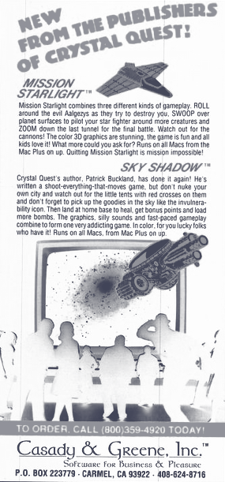
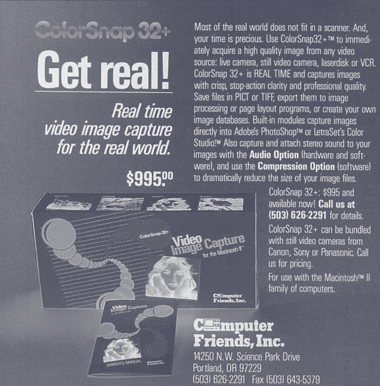
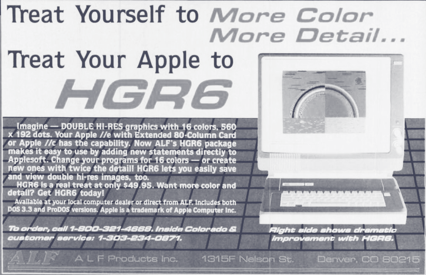
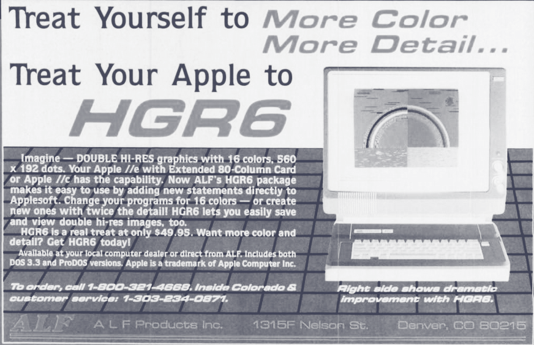
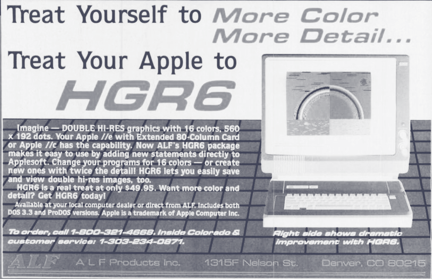

who...?
Hey again, it's still Vivian. I program what I think is cool and draw silly pictures. This had ranged from game show-themed study tools to terrible video players.
Regarding the rest of the time that I have left, this is mostly dedicated to art. Whether it is modelling cosplay props using CAD (they should have not been made in CAD), playing music, or drawing my favourite characters, art has always been a big part of my life ever since my childhood. This is going to be evident, but I combine computing and art a whole lot.
I don't have a solid—profession yet—in a sense. Still a student and trying to figure things out; but that's the fun of it, huh?
cool stuff I've worked with
- FPGAs: ECE 124 pretty much settled my career path
- Fusion 360: What allowed me to make cosplay props
- Blender: 3D animations are fun
- Procreate: How I make all my digital art
- Desmos: Desmos art.
- Linux: Recently started using it; I feel much lighter
fun facts about me
- I love 90s UI. Been trying to make my computer look like an undescript computer from that time period :)
- I collect and drink green tea
- My music taste consists of J-pop, breakcore, digital hardcore, and 2010s pop
-


 

